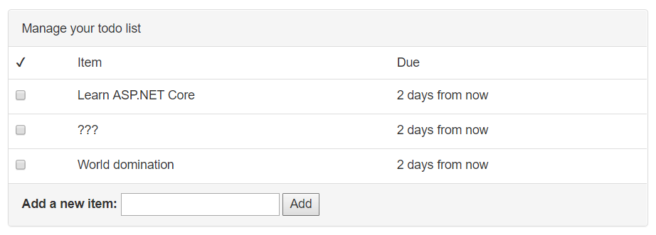

添加 待办事项 条目
使用列表下面那个简易的表单，用户可以添加新的 待办事项 条目：

添加这个功能，需要几个步骤：
- 在视图里添加一个 表单
- 在控制器里添加一个新的 action 处理这个表单
- 在服务层添加代码，对数据库进行修改
添加一个表单
视图 Todo/Index.cshtml 里有个占位符，代表 Add Item form：
<div class="panel-footer add-item-form">
<!-- TODO: Add item form -->
</div>
为保持各部分独立且组织良好，你应该以 局部视图（partial view） 的形式创建这个表单。局部视图是较大视图的一个小片段，存放于一个独立的文件。
创建一个 AddItemPartial.cshtml 视图：
Views/Todo/AddItemPartial.cshtml
@model TodoItem
<form asp-action="AddItem" method="POST">
<label asp-for="Title">Add a new item:</label>
<input asp-for="Title">
<button type="submit">Add</button>
</form>
asp-action 这个 tag helper 会为该表单生成一个 URL，就像你将其应用在一个 <a> 元素上那样。在本例中，asp-action 会被你创建的 AddItem 的真实地址取代：
<form action="/Todo/AddItem" method="POST">
在 <form> 元素里，添加一个 asp- tag helper 的同时会在表单里添加一个隐藏字段，其中包含一个验证标记。该验证标记可用于防止 跨站请求伪造(cross-site request forgery -- CSRF) 攻击。在你编写这个 action 的时候，会验证这个标记。
局部视图就这样创建好了。然后，要在 Todo 主视图里引用它：
Views/Todo/Index.cshtml
<div class="panel-footer add-item-form">
@await Html.PartialAsync("AddItemPartial", new TodoItem())
</div>
添加 action
当某个用户在你刚刚创建的表单里点击 Add，其浏览器会构建一个 POST 请求到你应用程序的 /Todo/AddItem。眼下这不会有效果，因为还没有任何 action 会处理 /Todo/AddItem 这个路由。如果你现在去尝试，ASP.NET Core 会返回一个 404 Not Found 错误。
你需要在 TodoConteoller 中添加一个名为 AddItem 的新 action：
[ValidateAntiForgeryToken]
public async Task<IActionResult> AddItem(TodoItem newItem)
{
if (!ModelState.IsValid)
{
return RedirectToAction("Index");
}
var successful = await _todoItemService.AddItemAsync(newItem);
if (!successful)
{
return BadRequest("Could not add item.");
}
return RedirectToAction("Index");
}
注意到 AddItem action 接受一个 TodoItem 参数的方式了吗？这是你在 MVC basics 章节中创建的那个，用于存储一个 待办事项条目 相关信息的 TodoItem 模型。当它在这里作为一个 action 参数使用， ASP.NET Core 会自动执行一个称为 模型绑定 的处理流程。
模型绑定流程会查看请求内的数据，并试图智能地把输入的字段和模型里的属性匹配起来。换句话说，当用户提交这个表单，并且浏览器 POST 到了此 action，ASP.NET Core 会从表单里提取信息，并存放到那个 newItem 变量里。
位于 action 前面的 [ValidateAntiForgeryToken] 属性告知 ASP.NET Core 去查找（并验证）那个隐藏的验证标记，就是由 asp-action tag helper 添加到表单里的那个标记。在处理 跨站请求伪造（CSRF） 的时候，这是个重要的安全措施，你的用户可能被欺骗，以至于在一个恶意的网站上提交数据。这里的验证标记被用于确保呈现和提交表单的，是你的程序。
再检视一次 AddItemPartial.cshtml 视图。文件顶部的 @model TodoItem 那行告知 ASP.NET Core，该视图需要配合 TodoItem 模型一起使用。它促成了以下功能，在 <input> 标签上，应用 asp-for="Title"，让 ASP.NET Core 知晓该 input 元素是为 Title 字段服务的。
由于 @model 这一行的存在，此局部视图在被渲染的时候，期望被传入一个 TodoItem 对象。经由 Html.PartialAsync 传给它一个 new TodoItem，以一个空条目初始化该表单。（请尝试添加{ Title = "hello" }，看看会发生什么！）
在模型绑定流程中，模型里的任何属性，如果不能匹配到请求里的字段，都会被忽略掉。由于表单里仅包含一个 Title 元素，你能预见 TodoItem 上的其它属性（IsDone 标记，DueAt 日期）将为空，或者包含着一个默认值。
作为复用
TodoItem模型的替代方案，还可以创建一个独立的模型（比如叫NewTodoItem），仅用于这个 action 中，并仅具有特定的字段（Title），用于添加新的待办事项条目。模型绑定流程依然要用到，但现在，你分离了两个模型，一个用于在数据库中存储待办事项条目，另一个用于绑定传入的请求数据。这个方案，也被称作 绑定模型（binding model） 或者 数据传输对象（data transfer object）（DTO）。这个模式常见于更大更复杂的项目。
请求数据绑定到模型后，ASP.NET Core 还进行了 模型核验操作（model validation）。核验操作检查从传入请求绑定到模型的数据，鉴别其合理性和有效性。你可以在模型中添加属性，告知 ASP.NET Core 以怎样的方式进行核验。
Title 字段上的 [Required] 属性告知 ASP.NET Core 的模型核验器，如果标题缺失或为空，则判定其无效。看一下 action AddItem 的代码：首个代码块检查 ModelState（模型核验的结果）是否有效。习惯上，这种核验都在 action 最开始的地方进行。
if (!ModelState.IsValid)
{
return RedirectToAction("Index");
}
如果 ModelState 出于某种原因无效，浏览器会被重定向到路由 /Todo/Index，后者会刷新页面。
接下来，控制器调用到服务层，进行实际的数据库操作，保存这个新的待办事项条目：
var successful = await _todoItemService.AddItemAsync(newItem);
if (!successful)
{
return BadRequest(new { error = "Could not add item." });
}
取决于该条目添加到数据库的结果成功与否，AddItemAsync 方法会返回 true 或者 false。如果该操作因为某些原因失败了，action 会连带一个包含 error 字段的对象，返回 400 Bad Request。
最终，如果操作顺利完成，action 会将浏览器重定向到路由 /Todo/Index，后者会刷新页面并向用户显示新的待办事项列表。
添加服务方法(函数)
如果你使用的代码编辑器了解 C# 的语法，你会在 AddItemAsync 下面看到红色的波浪线，因为该方法尚未定义。
作为最后一步，你需要在服务层里添加一个方法。首先，在 ITodoItemService 接口里添加它的定义：
public interface ITodoItemService
{
Task<TodoItem[]> GetIncompleteItemsAsync();
Task<bool> AddItemAsync(TodoItem newItem);
}
然后，在 TodoItemService 里面添加实现：
public async Task<bool> AddItemAsync(TodoItem newItem)
{
newItem.Id = Guid.NewGuid();
newItem.IsDone = false;
newItem.DueAt = DateTimeOffset.Now.AddDays(3);
_context.Items.Add(newItem);
var saveResult = await _context.SaveChangesAsync();
return saveResult == 1;
}
字段 newItem.Title 已经由 ASP.NET Core 的模型绑定器设置，所以，这个方法仅需要分配 ID 并为其它字段设置缺省值。然后，这个新条目被加入到数据库上下文中。在调用 SaveChangesAsync() 前它尚未被保存。如果保存操作成功，SaveChangesAsync() 会返回 1。
试试看
运行程序，使用页面上的表单添加几个条目到 待办事项 列表里。因为这些条目存储在数据库里，就算你关闭程序后再重新运行，这些条目都还保存在那里。
作为附加练习，请尝试使用 HTML 和 JavaScript 添加一个日期选择框，并让用户为
DueAt属性选择一个(可选的)日期。然后，用这个日期替换那个默认的“3天后到期”。
Add new to-do items
The user will add new to-do items with a simple form below the list:
Adding this feature requires a few steps:
- Adding a form to the view
- Creating a new action on the controller to handle the form
- Adding code to the service layer to update the database
Add a form
The Views/Todo/Index.cshtml view has a placeholder for the Add Item form:
<div class="panel-footer add-item-form">
<!-- TODO: Add item form -->
</div>
To keep things separate and organized, you'll create the form as a partial view. A partial view is a small piece of a larger view that lives in a separate file.
Create an AddItemPartial.cshtml view:
Views/Todo/AddItemPartial.cshtml
@model TodoItem
<form asp-action="AddItem" method="POST">
<label asp-for="Title">Add a new item:</label>
<input asp-for="Title">
<button type="submit">Add</button>
</form>
The asp-action tag helper can generate a URL for the form, just like when you use it on an <a> element. In this case, the asp-action helper gets replaced with the real path to the AddItem route you'll create:
<form action="/Todo/AddItem" method="POST">
Adding an asp- tag helper to the <form> element also adds a hidden field to the form containing a verification token. This verification token can be used to prevent cross-site request forgery (CSRF) attacks. You'll verify the token when you write the action.
That takes care of creating the partial view. Now, reference it from the main Todo view:
Views/Todo/Index.cshtml
<div class="panel-footer add-item-form">
@await Html.PartialAsync("AddItemPartial", new TodoItem())
</div>
Add an action
When a user clicks Add on the form you just created, their browser will construct a POST request to /Todo/AddItem on your application. That won't work right now, because there isn't any action that can handle the /Todo/AddItem route. If you try it now, ASP.NET Core will return a 404 Not Found error.
You'll need to create a new action called AddItem on the TodoController:
[ValidateAntiForgeryToken]
public async Task<IActionResult> AddItem(TodoItem newItem)
{
if (!ModelState.IsValid)
{
return RedirectToAction("Index");
}
var successful = await _todoItemService.AddItemAsync(newItem);
if (!successful)
{
return BadRequest("Could not add item.");
}
return RedirectToAction("Index");
}
Notice how the new AddItem action accepts a TodoItem parameter? This is the same TodoItem model you created in the MVC basics chapter to store information about a to-do item. When it's used here as an action parameter, ASP.NET Core will automatically perform a process called model binding.
Model binding looks at the data in a request and tries to intelligently match the incoming fields with properties on the model. In other words, when the user submits this form and their browser POSTs to this action, ASP.NET Core will grab the information from the form and place it in the newItem variable.
The [ValidateAntiForgeryToken] attribute before the action tells ASP.NET Core that it should look for (and verify) the hidden verification token that was added to the form by the asp-action tag helper. This is an important security measure to prevent cross-site request forgery (CSRF) attacks, where your users could be tricked into submitting data from a malicious site. The verification token ensures that your application is actually the one that rendered and submitted the form.
Take a look at the AddItemPartial.cshtml view once more. The @model TodoItem line at the top of the file tells ASP.NET Core that the view should expect to be paired with the TodoItem model. This makes it possible to use asp-for="Title" on the <input> tag to let ASP.NET Core know that this input element is for the Title property.
Because of the @model line, the partial view will expect to be passed a TodoItem object when it's rendered. Passing it a new TodoItem via Html.PartialAsync initializes the form with an empty item. (Try appending { Title = "hello" } and see what happens!)
During model binding, any model properties that can't be matched up with fields in the request are ignored. Since the form only includes a Title input element, you can expect that the other properties on TodoItem (the IsDone flag, the DueAt date) will be empty or contain default values.
Instead of reusing the
TodoItemmodel, another approach would be to create a separate model (likeNewTodoItem) that's only used for this action and only has the specific properties (Title) you need for adding a new to-do item. Model binding is still used, but this way you've separated the model that's used for storing a to-do item in the database from the model that's used for binding incoming request data. This is sometimes called a binding model or a data transfer object (DTO). This pattern is common in larger, more complex projects.
After binding the request data to the model, ASP.NET Core also performs model validation. Validation checks whether the data bound to the model from the incoming request makes sense or is valid. You can add attributes to the model to tell ASP.NET Core how it should be validated.
The [Required] attribute on the Title property tells ASP.NET Core's model validator to consider the title invalid if it is missing or blank. Take a look at the code of the AddItem action: the first block checks whether the ModelState (the model validation result) is valid. It's customary to do this validation check right at the beginning of the action:
if (!ModelState.IsValid)
{
return RedirectToAction("Index");
}
If the ModelState is invalid for any reason, the browser will be redirected to the /Todo/Index route, which refreshes the page.
Next, the controller calls into the service layer to do the actual database operation of saving the new to-do item:
var successful = await _todoItemService.AddItemAsync(newItem);
if (!successful)
{
return BadRequest(new { error = "Could not add item." });
}
The AddItemAsync method will return true or false depending on whether the item was successfully added to the database. If it fails for some reason, the action will return an HTTP 400 Bad Request error along with an object that contains an error message.
Finally, if everything completed without errors, the action redirects the browser to the /Todo/Index route, which refreshes the page and displays the new, updated list of to-do items to the user.
Add a service method
If you're using a code editor that understands C#, you'll see red squiggely lines under AddItemAsync because the method doesn't exist yet.
As a last step, you need to add a method to the service layer. First, add it to the interface definition in ITodoItemService:
public interface ITodoItemService
{
Task<TodoItem[]> GetIncompleteItemsAsync();
Task<bool> AddItemAsync(TodoItem newItem);
}
Then, the actual implementation in TodoItemService:
public async Task<bool> AddItemAsync(TodoItem newItem)
{
newItem.Id = Guid.NewGuid();
newItem.IsDone = false;
newItem.DueAt = DateTimeOffset.Now.AddDays(3);
_context.Items.Add(newItem);
var saveResult = await _context.SaveChangesAsync();
return saveResult == 1;
}
The newItem.Title property has already been set by ASP.NET Core's model binder, so this method only needs to assign an ID and set the default values for the other properties. Then, the new item is added to the database context. It isn't actually saved until you call SaveChangesAsync(). If the save operation was successful, SaveChangesAsync() will return 1.
Try it out
Run the application and add some items to your to-do list with the form. Since the items are being stored in the database, they'll still be there even after you stop and start the application again.
As an extra challenge, try adding a date picker using HTML and JavaScript, and let the user choose an (optional) date for the
DueAtproperty. Then, use that date instead of always making new tasks that are due in 3 days.